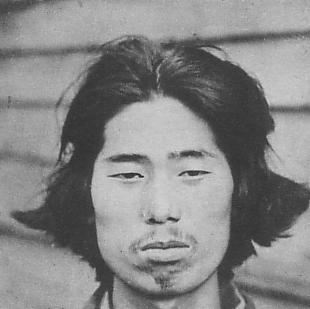
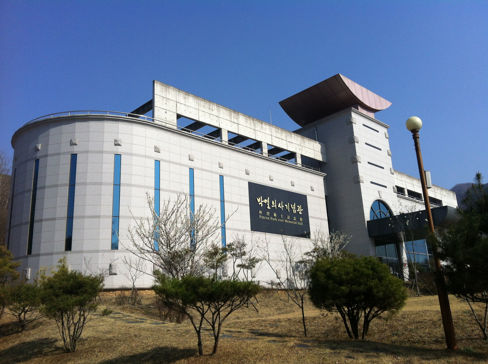

3.1운동과 임시정부수립 100주년, 2019년의 해가 밝을 날이 머지않았다. 영화 <박열>과 <암살>, 드라마 <미스터 션샤인>, 다수의 책과 윤동주 시인의 시를 모티브로 한 엽서와 문구류까지. 독립운동의 정신은 단순히 교과서에 머물지 않고 다양한 방식으로 오늘의 세계와 공명하며 이어지고 있다. 분명한 것은 독립운동을 바라보는 새로운 패러다임이 등장했다는 사실이다. 미디어가 대중의 관심을 이끌어 낸 경우도 있고, 대중의 인식 변화에 미디어가 맞춰간 경우도 있다.
Part 1: 미디어가 부르고 시대가 답하다
“내 육체는 자네들 마음대로 죽일 수 있겠지만 내 정신은 어찌할 수 있겠는가.”
-영화 <박열>-
영화 <박열>의 흥행과 소설 <아나키스트 박열>의 출간
 ▲ 독립운동가 박열의 사진
230만 명 이상의 관객을 동원한 영화 <박열>이 개봉된 것은 2017년 6월이었다. 박열의사기념관의 학예연구사 오지훈씨(30)는 영화 개봉 이후 박열 의사와 그의 아내이자 동지였던 가네코 후미코(金子文子)에 대한 관심이 부쩍 늘어났다고 했다. 오씨는 “영화 개봉 이전에는 박열 선생님과 가네코 여사님의 행적이 많이 알려지지 않았기 때문에 기념관을 방문하시는 분들이 그렇게 많지는 않았다”며 “연 평균 관람객이 약 1만에서 1만2천명 정도였는데 영화 개봉 후에는 두 배 가량 증가하여 2만 6천명의 관람객이 다녀갔다”고 말했다. “특히, 11월 17일 순국선열의 날에 가네코 여사님이 독립유공자로 포상을 받으시면서 관련 문의 전화와 인터뷰 요청이 계속해서 오고 있는 상황”이라고 덧붙였다.
영화 개봉 즈음에 소설 <아나키스트 박열>을 펴낸 손승휘씨(60)는 소설 집필에 욕심을 내게 된 이유로 “박열과 가네코 후미코가 일본의 중심에서 자신들이 가진 모든 것을 이용해서 맹렬하게 투쟁했고, 어설퍼보이는 단체지만 흑도회(黑濤會)의 동지들이 국적과 출신 계급을 초월해서 서로의 신념으로 함께했던 것”을 꼽았다. 손씨는 작가로서 박열이나 가네코 후미코의 이야기가 많이 회자되는 것이 상당히 고무적이라고 말했다.
박열의사기념관으로 본 박열과 아나키즘
 ▲ 경북 문경에 위치한 박열의사기념관 (출처: 박열의사기념관)
경상북도 문경에 있는 박열의사기념관은 박열의사기념사업회에서 운영하고 있는 곳으로, 2012년에 정식으로 개관하였다. 매년 1월 박열 의사 추도식, 7월에 가네코 후미코의 추도식을 진행하고 있다. 2019년에는 가네코 후미코 포상과 관련하여 문헌 발간이나 학술대회를 계획 중에 있다.
오 연구사는 박열 의사가 비교적 늦게 대중에게 알려진 것에 대해 주 활동지가 일본이었던 점, 히로히토 황태자 암살 거사를 일으키기 전 계획이 발각되어 실행으로 옮기지 못한 점, 그리고 1950년 한국전쟁 당시 납북되어 이후의 활동 및 기록이 전무하다는 점 등을 이유로 꼽았다. 하지만 국내와 일본에서 관련 연구가 활발하게 진행되고 있으며, 특히 국내에서 기존의 연구 자료들과 대비되는 자료들이 새롭게 등장하고 있다는 것이 오씨의 의견이다.
박열 의사는 3.1 운동에 적극적으로 가담해 활동하면서 민족주의적인 모습을 먼저 보였다. 이후 순사에게 잡혀간 사람들이 모진 고문을 받는다는 사실을 알게 되어 일본으로 건너갔다. 그곳에서 아나키즘을 받아들이고 가네코 후미코와 함께 항일 운동을 전개했다. 박열 의사는 주로 ‘흑도(黑濤)’, ‘후토이센징(太い鮮人)’, ‘현사회(現社會)’ 등의 아나키즘 기관지를 발간해서 일본 제국주의를 비판했으며, 의열단과의 연계를 통해 폭탄을 반입하여 히로히토 황세자의 결혼식 날 거사를 계획했다.
오 연구사는 아나키즘에 대해 “인간을 구속하는 모든 권력과 조직, 제도, 종교 등을 거부하고 부정하는 단순 ‘무정부주의’보다는 더 큰 개념의 사상”이라고 설명했다. 이어 “모든 인간은 평등해야 하고 어떠한 권위도 존재하여서는 안 된다는 것”이 아나키즘의 주장이라고 했다.
시대를 살아가는 이들의 답장
오지훈씨는 “기념관을 운영하는 사람들로서는 박열 선생님과 가네코 여사님이 재조명 되는 것이 매우 기쁘지만 그것을 넘어 다른 독립운동가 분들이 조명을 받으시는데 조금이나마 보탬이 되고 싶다”며 “이번 3.1 운동과 임시정부수립 100주년은 단순히 기념하는 한 해가 되기보다는 국민의 무관심 속에 방치되었던 독립 운동가분들을 다시금 생각하고 관심을 기울이는 시간이 되었으면 한다”고 말했다.
작가 손승휘씨는 박열 의사와 아나키즘 독립운동에 대해 “자신의 신념을 가지고 논쟁하는 모든 행위는 가치가 있다고 생각한다”며 “소규모이든 대규모이든 모여서 끝없이 논쟁하는 과정만으로도 사회는 발전한다”고 했다. 특히 그 시절 박열 의사에 대해 “재판 혹은 시위를 통해 조선의 독립을 주목하게 만든 것만으로도 충분히 의미가 있다”고 덧붙였다. 손씨는 “독립운동을 총칼 들고 하는 행위로만 집중하고 다룰 것이 아니라 교육과 사상, 스스로의 신념에 일생을 보낸 위인들에 대해서도 더 조명해야 한다”고 말했다.
글: 박현